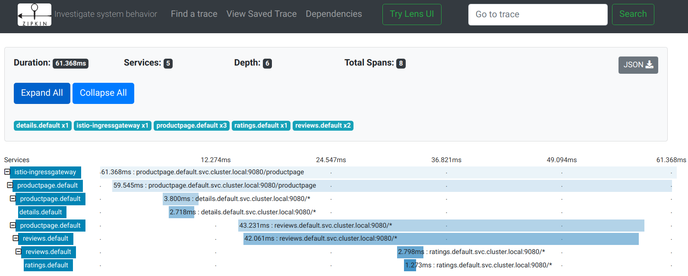

可观测性
Istio 为网格内所有的服务通信生成详细的遥测数据。 这种遥测技术提供了服务行为的可观察性，使运维人员能够排查故障、维护和优化应用程序，而不会给服务的开发人员带来任何额外的负担。
通过 Istio，运维人员可以全面了解到受监控的服务如何与其他服务以及 Istio 组件进行交互。
Istio 生成以下类型的遥测数据，以提供对整个服务网格的可观察性：
- 指标: Istio 基于 4 个监控的黄金标识（延迟、流量、错误、饱和）生成了一系列服务指标。Istio 还为网格控制平面提供了更详细的指标。除此以外还提供了一组默认的基于这些指标的网格监控仪表板。
- 分布式追踪: Istio 为每个服务生成分布式追踪 span，运维人员可以理解网格内服务的依赖和调用流程。
- 访问日志: 当流量流入网格中的服务时，Istio 可以生成每个请求的完整记录，包括源和目标的元数据。此信息使运维人员能够将服务行为的审查控制到单个工作负载实例的级别。
下面，我们来依次进行讲解。
指标
指标（Metric）提供了一种以聚合的方式监控和理解行为的方法。
为了监控服务行为，Istio 为服务网格中所有出入网格，以及网格内部的服务流量都生成了指标。 这些指标提供了关于行为的信息，例如总流量数、错误率和请求响应时间。
除了监控网格中服务的行为外，监控网格本身的行为也很重要。 Istio 组件可以导出自身内部行为的指标，以提供对网格控制平面的功能和健康情况的洞察能力。
代理级别指标
Istio 指标收集从 sidecar 代理（Envoy）开始。 每个代理为通过它的所有流量（入站和出站）生成一组丰富的指标。 代理还提供关于它本身管理功能的详细统计信息，包括配置信息和健康信息。
Envoy 生成的指标提供了资源（例如监听器和集群）粒度上的网格监控。 因此，为了监控 Envoy 指标，需要了解网格服务和 Envoy 资源之间的连接。
Istio 允许运维人员在每个工作负载实例上选择生成和收集哪个 Envoy 指标。 默认情况下，Istio 只支持 Envoy 生成的统计数据的一小部分，以避免依赖过多的后端服务，还可以减少与指标收集相关的 CPU 开销。 然而，运维人员可以在需要时轻松地扩展收集到的代理指标集。 这支持有针对性地调试网络行为，同时降低了跨网格监控的总体成本。
代理级别指标的示例：
envoy_cluster_internal_upstream_rq{response_code_class="2xx",cluster_name="xds-grpc"} 7163
envoy_cluster_upstream_rq_completed{cluster_name="xds-grpc"} 7164
envoy_cluster_ssl_connection_error{cluster_name="xds-grpc"} 0
envoy_cluster_lb_subsets_removed{cluster_name="xds-grpc"} 0
envoy_cluster_internal_upstream_rq{response_code="503",cluster_name="xds-grpc"} 1
服务级别指标
除了代理级别指标之外，Istio 还提供了一组用于监控服务通信的面向服务的指标。 这些指标涵盖了四个基本的服务监控需求：延迟、流量、错误和饱和情况。 Istio 带有一组默认的仪表板，用于监控基于这些指标的服务行为。
默认的 Istio 指标由 Istio 提供的配置集定义并默认导出到 Prometheus。 运维人员可以自由地修改这些指标的形态和内容，更改它们的收集机制，以满足各自的监控需求。
收集指标任务为定制 Istio 指标生成提供了更详细的信息。
服务级别指标的使用完全是可选的。运维人员可以选择关闭指标的生成和收集来满足自身需要。
示例如下：
istio_requests_total{
connection_security_policy="mutual_tls",
destination_app="details",
destination_canonical_service="details",
destination_canonical_revision="v1",
destination_principal="cluster.local/ns/default/sa/default",
destination_service="details.default.svc.cluster.local",
destination_service_name="details",
destination_service_namespace="default",
destination_version="v1",
destination_workload="details-v1",
destination_workload_namespace="default",
reporter="destination",
request_protocol="http",
response_code="200",
response_flags="-",
source_app="productpage",
source_canonical_service="productpage",
source_canonical_revision="v1",
source_principal="cluster.local/ns/default/sa/default",
source_version="v1",
source_workload="productpage-v1",
source_workload_namespace="default"
} 214
控制面指标
每一个 Istio 的组件（Pilot、Galley、Mixer）都提供了对自身监控指标的集合。 这些指标容许监控 Istio 自己的行为（这与网格内的服务有所不同）。
分布式追踪
分布式追踪通过监控流经网格的单个请求，提供了一种监控和理解行为的方法。 追踪使网格的运维人员能够理解服务的依赖关系以及在服务网格中的延迟源。
Istio 支持通过 Envoy 代理进行分布式追踪。 代理自动为其应用程序生成追踪 span，只需要应用程序转发适当的请求上下文即可。
Istio 支持很多追踪系统，包括 Zipkin、Jaeger、LightStep、Datadog。 运维人员控制生成追踪的采样率（每个请求生成跟踪数据的速率）。这允许运维人员控制网格生成追踪数据的数量和速率。
Istio 为一个请求生成的分布式追踪数据：

访问日志
访问日志提供了一种从单个工作负载实例的角度监控和理解行为的方法。
Istio 可以以一组可配置的格式集生成服务流量的访问日志，为运维人员提供日志记录的方式、内容、时间和位置的完全控制。
Istio 向访问日志机制暴露了完整的源和目标元数据，允许对网络通信进行详细的审查。
访问日志可以在本地生成，或者导出到自定义的后端基础设施，包括 Fluentd。
Istio 访问日志示例(JSON) 格式:
{
"level":"info",
"time":"2019-06-11T20:57:35.424310Z",
"instance":"accesslog.instance.istio-control",
"connection_security_policy":"mutual_tls",
"destinationApp":"productpage",
"destinationIp":"10.44.2.15",
"destinationName":"productpage-v1-6db7564db8-pvsnd",
"destinationNamespace":"default",
"destinationOwner":"kubernetes://apis/apps/v1/namespaces/default/deployments/productpage-v1",
"destinationPrincipal":"cluster.local/ns/default/sa/default",
"destinationServiceHost":"productpage.default.svc.cluster.local",
"destinationWorkload":"productpage-v1",
"httpAuthority":"35.202.6.119",
"latency":"35.076236ms",
"method":"GET",
"protocol":"http",
"receivedBytes":917,
"referer":"",
"reporter":"destination",
"requestId":"e3f7cffb-5642-434d-ae75-233a05b06158",
"requestSize":0,
"requestedServerName":"outbound_.9080_._.productpage.default.svc.cluster.local",
"responseCode":200,
"responseFlags":"-",
"responseSize":4183,
"responseTimestamp":"2019-06-11T20:57:35.459150Z",
"sentBytes":4328,
"sourceApp":"istio-ingressgateway",
"sourceIp":"10.44.0.8",
"sourceName":"ingressgateway-7748774cbf-bvf4j",
"sourceNamespace":"istio-control",
"sourceOwner":"kubernetes://apis/apps/v1/namespaces/istio-control/deployments/ingressgateway",
"sourcePrincipal":"cluster.local/ns/istio-control/sa/default",
"sourceWorkload":"ingressgateway",
"url":"/productpage",
"userAgent":"curl/7.54.0",
"xForwardedFor":"10.128.0.35"
}